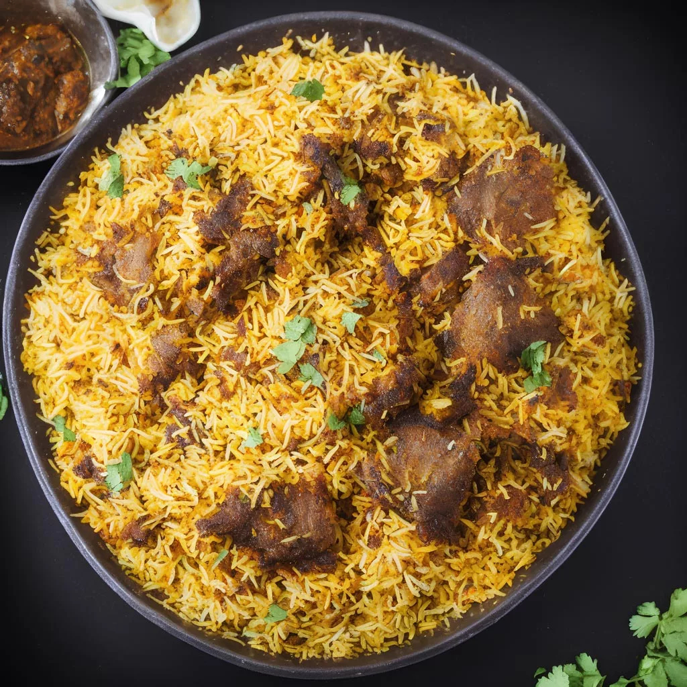

Mutton Briyani

Description
Mutton biryani is the epitome of Indian cuisine, with layers of beautifully spiced mutton and tender grains of rice topped with coriander and fried onions.
Serve with raita for a refreshing combination of heat and flavour. Mutton Biryani!
Required Ingredients
- ½ Cup Cooking Oil
- 4-5 Bay Leaves
- 4-5 Cloves
- 2pcs of Cinnamon
- 4 Green Cardamoms
- 2 Black Cardamoms
- 1 Onion Sliced
- 1 Kilo Mutton
- 2 Tbsp Ginger Garlic Paste
- Salt to Taste
- 1 Tsp Turmeric
- 2 Tomatoes Finely Chopped
- 5-6 Green Chillies Crushed
- 500 Gms Basmati Rice
- 1 Tbsp Coriander Seeds
- ½ Tbsp Cumin
- ½ Tsp Black Pepper Corns
- 1 Small pc Nutmeg
- 2 Small pcs of Mace
- 1 pc Cinnamon 4-5 Cloves
- 1 Black Cardamom
- 4-5 Green Cardamoms
- 1 Star Anise
- 2 Tbsp Cashews
- 1 Tsp Sesame
- 1 Tsp Khas Khas (Optional)
- Pinch of Saffron
- 1 Tbsp Chilli Flakes
- 1 Tbsp Red Chilli Powder
- ½ Cup Fried Onions
- 1 Cup Curd Fresh Mint Leaves
- Fresh Coriander Leaves
- Juice of Half Lemon
- Salt to Taste
- 1 Tbsp Oil
- 2 Bay Leaves
- 1 Black Cardamom
- 2 Cloves
- Star Anise
- 1 Small pc of Cinnamon
- 3 Green Chillies
- 1 Tbsp Kewra Water
- Juice of Half Lemon
- Some Fried Potatoes
- 4 Fried Potatoes
- Sprinkle some Coriander
- Sprinkle Fresh Mint Leaves
- Sprinkle Fried Onions
- ½ Cup Milk
- Pinch of Saffron soaked in Milk
- 1 Tsp Kewra Water
- 1-2 Tbsp Ghee
- Sprinkle fried onions
Steps
- Heat oil in a pressure cooker, add bay leaves, cloves, cinnamon, green cardamoms and black cardamoms. Add sliced onion after a minute.
- On a high flame, fry the onions until golden brown in color.
- ake large-sized mutton pieces, wash and dry them properly. Add them to the pressure cooker.
- Add ginger garlic paste, salt to taste and turmeric powder.
- On a high flame, fry mutton pieces for 7 to 8 minutes.
- Add chopped tomato pieces, crushed green chillies. Mix and add water.
- Note – Adjust oil, salt and chilli level as per your preference and taste.
- Cover the lid of cooker and cook on high flame until one whistle. Then, lower the flame and cook for 10-12 minutes.
- Note – the time take for mutton to tenderize depends on the quality of mutton and gas flame. So you need to set your time to cook it accordingly.
- Soak basmati rice in water one hour before the preparation.
- Note – You can use up to 700 gms of basmati rice for 1 kg mutton.
- Spices – take coriander seeds, cumin, black pepper corns, and small piece of nutmeg, small pieces of mace, cinnamon, cloves, black cardamom, green cardamoms and star anise.
- Also add, cashews, sesame, poppy seeds (optional), saffron (optional), chilli flakes, red chilli powder and fried onions.
- Note – If you’re making fried onions at home, then take 2 big-sized onions.
- Grind all the ingredients into a powder. Do not add water while grinding.
- In a bowl, take curd, add grinded powder into it. Add some mint leaves, coriander leaves and lemon juice. Mix everything well.
- Coming back to the mutton, open the lid of pressure cooker and check if the mutton has tenderized by now.
- Transfer the mutton curry to a pot in which you will prepare Biryani.
- Add the curd and powdered spices mixture to the curry. Mix it well in the curry.
- Let the curry boil on high flame for a minute. Lower the flame, cover and cook for 5 to 7 minutes.
- Boil rice in 2 litres of water. While the water is boiling, add salt, oil, bay leaves , black cardamom, cloves, star anise, small piece of cinnamon and green chillies.
- Note – you can also add black cumin or shah jeera.
- Add soaked rice when the water starts boiling. Also add kewra water and lemon juice. Mix and stir lightly. On high flame boil rice for 5-7 minutes. Cook the rice up to 80%.
- Turn off the flame and strain the rice from water.
- Coming back to the mutton curry, check how it is cooked. Oil should be separated by now.
- Note - Do not dry out the gravy completely, as we will cook it with rice and we do not want the gravy to stick to the bottom of pan. If your gravy has dried out, then you can add water to match the said consistency.
- For layering of Biryani – turn off the flame and start with layering first.
- Add fried potato pieces on the edges of the pot in circular direction.
- Note – we’re placing in this manner as it helps in serving easily. Use medium-sized potatoes. You can also skip adding potatoes.
- Sprinkle some coriander leaves and fried onions on the top. Now add a layer of boiled rice over it.
- Pour half cup milk on the same layer. Pour saffron soaked in milk.
- Tip – You can also add yellow food colour mixed in milk.
- Sprinkle kewra water and add some ghee and fried onions on the layer.
- Cover with a cloth and lid. Cook on high flame for 3-4 minutes and then cook on low flame for 10 to 12 minutes. Serve hot.